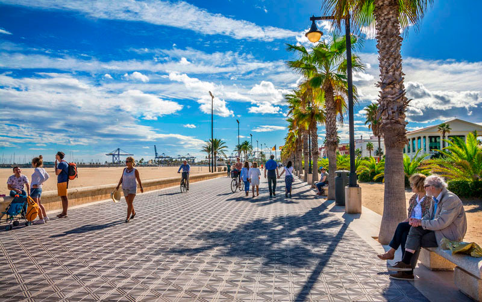

Valencia

Valencia se convirtió en la primera ciudad española en convertirse en destino pet-friendly en el año 2019. El ayuntamiento decidió poner en marcha una campaña conocida como "viajar juntos es mejor" y puso a disposición de los ciudadanos la web Valencia Pet Friendly con el objetivo de dar a conocer las alternativas de ocio y alojamiento disponibles en la ciudad donde los animales son bienvenidos.
Ven a conocernos
Sea You Apartamentos
Admitimos cualquier tipo de perro y otros animales de compañía. En las habitaciones disponemos de comederos y bebederos para las mascotas. Existen zonas comunes de acceso libre con la mascota (siempre atado) además de las habitaciones. Puedes contratar el servicio de mascota a través de nuestra web por tan solo un coste de 10€/día.
El proyecto, inspirado en diversas urbanizaciones de la Costa Azul en Francia y la Riviera en Italia, principalmente Port Grimaud en el golfo de Saint Tropez, consistió en construir un puerto o dársena rodeada de viviendas individuales en las que cada vecino pudiera tener su barco atracado en la puerta de su casa
Quédate con nosotros
Casual vintage
Tiene unas muy buenas instalaciones para las mascotas.El peso máximo por mascota es de 35 kg, pagando un suplemento de 10€/noche. No se puede dejar sola.
Ofrece wifi gratuito en todas sus áreas, habitaciones con TV por satélite y baño privado. Además de todo esto, cuenta con servicio de recepción 24 horas.
Quédate con nosotros
The Wesrtin Valencia
Westin Hotels & Resorts da la bienvenida a perros medianos y pequeños, ofreciéndoles el lujo y la comodidad de una cama comfortable para perros de felpa y servicios especiales, sin cargo alguno.Se aceptan mascotas de hasta 30 kg con un cargo no reembolsable de 30 EUR por habitación y día
Westin se toma en serio el disfrute. Más que una buena noche de sueño y una comida sana, Westin promueve un estilo de vida comprometido. Si tiene familia, le darán una Guía de Actividades Locales y un Diario Familiar Westin. Si desea perseguir el bienestar, pueden ofrecerle una serie de retiros centrados en el bienestar que incluyen fitness, yoga running y mucho más
Quédate con nosotros
La Fábrica de Huellas
Es un lugar único en Valencia donde puedes venir con tu perro y tomarte algo rico junto a él o disfrutar de la compañía gatuna en La Casa de los Gatos, donde vive una colonia felina en adopción.
Ven con tu mascota
Bastard Coffe and Kitchen
Es un local situado cerca de la zona universitaria,hablamos de unos de los restaurantes dogfriendly más interesantes de Valencia que combina a la perfección lo mejor la cocina mediterránea y estadounidense. De hecho, su principal atractivo son sus desayunos, brunch y meriendas,.
Ven con tu mascota
Las Adelitas Calle Bélgica
Es un restaurante pet-friendly donde ofrecen Auténtica gastronomía mexicana, cócteles especiales y un ambiente único en nuestros restaurantes Las Adelitas. ¡Te invitamos a compartir con nosotros un día a la mexicana!
Ven con tu mascota